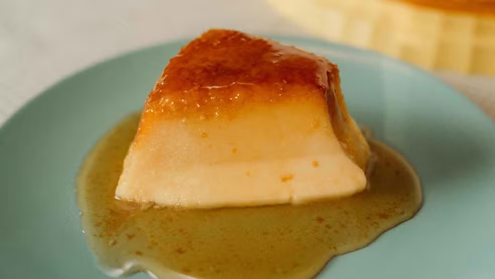
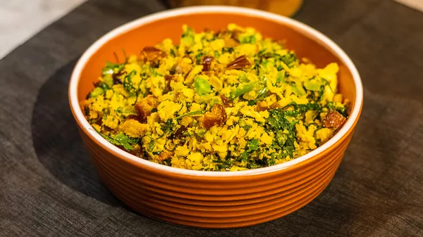
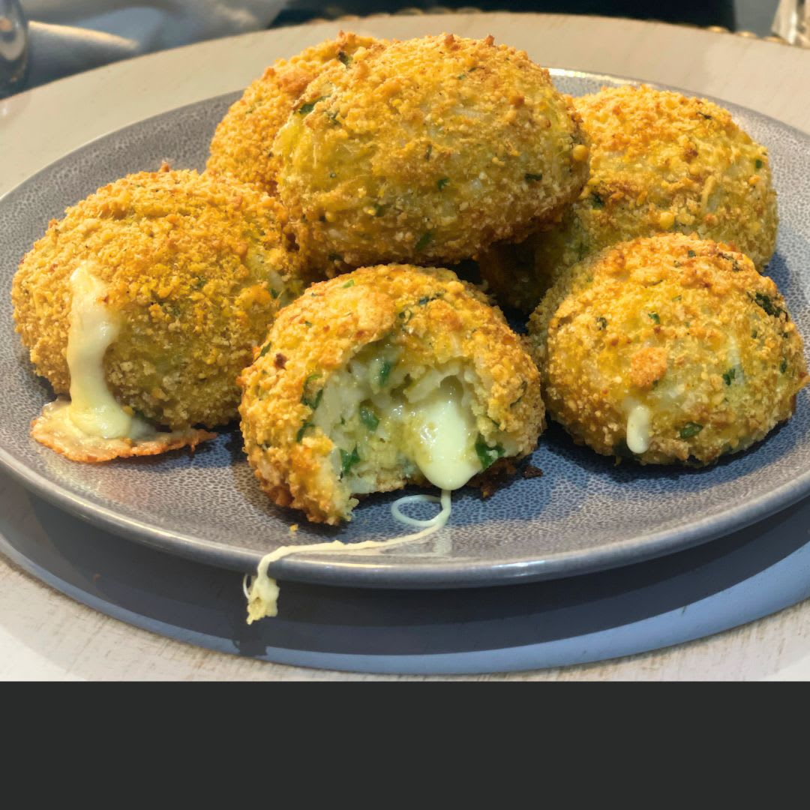
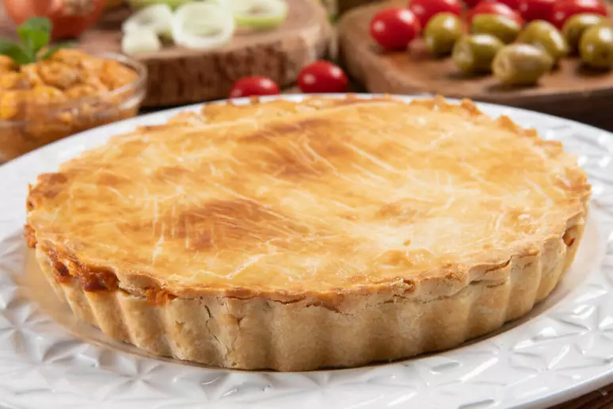

Pudim de Pão Crocante
Reaproveite aquele pão amanhecido e crie uma sobremesa deliciosa.
Aproveitamento de Pães

Farofa Rica em Talos
Talos de vegetais ganham nova vida nesta farofa nutritiva e saborosa.
Vegetais / Cascas

Bolinho de Arroz Recheado
Transforme o arroz que sobrou em um lanche crocante e irresistível.
Aproveitamento de Sobras

'Carne' de Casca de Banana
Uma alternativa vegana e sustentável, rica em fibras e sabor.
Aproveitamento de Frutas